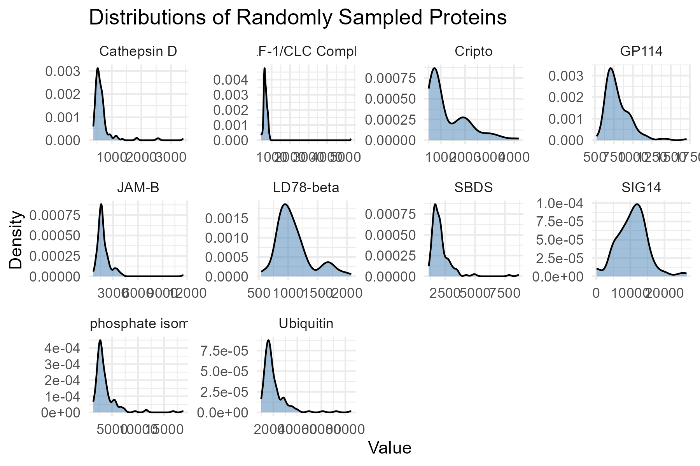
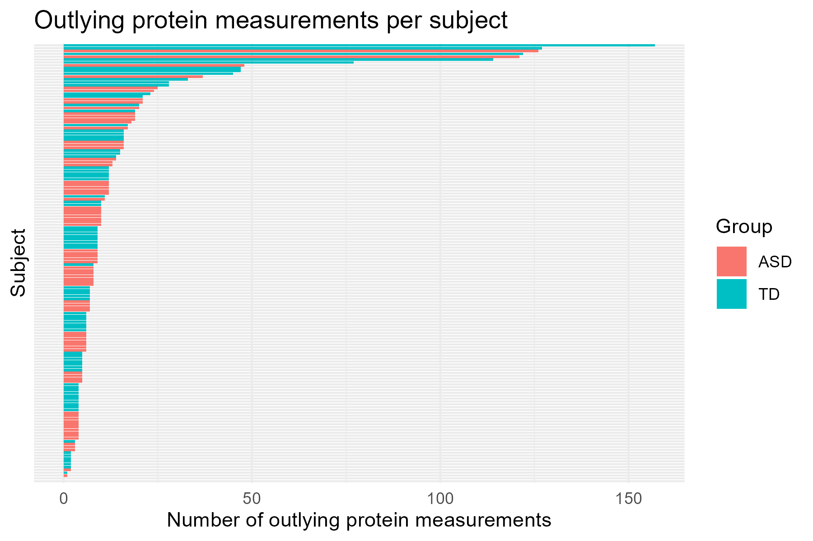
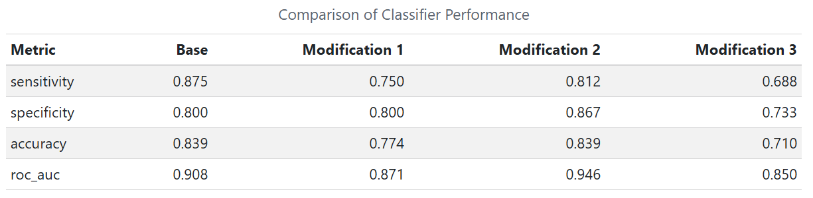

flowchart TD
A["154 serum samples<br/>76 ASD / 78 TD"]
B["SOMAScan assay<br/>(1,317 proteins)"]
C["Quality control and normalization<br/>(1,125 proteins retained)"]
D["Random forest<br/>(Top 10)"]
E["T-tests<br/>(Top 10)"]
F["Correlation with ADOS<br/>(Top 10)"]
G["Core panel: 5 proteins"]
H["Evaluate additional proteins"]
I["Final panel: 9 proteins"]
J["Logistic regression classifier"]
K["80% training / 20% testing<br/>1,000 repetitions"]
L["Reported metrics:<br/>AUC ≈ 0.86<br/>Sensitivity ≈ 83%<br/>Specificity ≈ 84%"]
A --> B --> C
C --> D
C --> E
C --> F
D --> G
E --> G
F --> G
G --> H --> I --> J --> K --> L
Biomarkers of ASD
Abstract
This report builds on an in-class reproduction of Hewitson et al.’s (2021) serum protein biomarker panel for ASD by assessing how sensitive the results are to specific methodological choices. Firstly, we examine why the protein levels were log-transformed and check whether outliers are concentrated in particular subjects or in one diagnostic group. Next, we modify the selection procedure in three ways: by holding out test data before any selection, choosing more than ten top proteins per method, and using a fuzzy rather than hard intersection across methods. The results of these changes are compared to the in-class analysis. Finally, we search for a simpler or alternative panel that achieves improved classification accuracy. A cross-validation-selected 38-protein lasso model and a one-protein (DERM) model, found in the panel search, each correctly classified 22 of 31 held-out subjects, compared with 24 of 31 for the five-protein in-class baseline. Neither panel matched or improved on baseline accuracy, but the lasso model achieved a higher AUROC (0.925 vs. 0.883).
Dataset
The data comes from Hewitson et al. (2021), a serum proteomic study of autism spectrum disorder (ASD). Fasting blood was drawn from 154 boys aged 18 months to 8 years: 76 with ASD and 78 typically developing (TD) controls. The mean age was about 5.6 years in the ASD group and 5.7 in the TD group. ASD diagnosis was based on DSM-5 criteria using the ADOS and ADI-R. TD boys were screened for developmental concerns with the ABAS-II, and boys with a family history of ASD were excluded. The raw data file has 154 rows (one per subject) and 1,317 protein columns. Each protein column has a full name and an abbreviation. The file also has a Group label (ASD or TD) and the ADOS total score (Social Affect + Restricted and Repetitive Behaviors). ADOS is recorded only for ASD subjects and is missing (“-”) for TD subjects.
For preprocessing, we read the protein names and abbreviations from the two header rows and recodes “-” and blank cells as missing. Empty rows were dropped, and a log transformation was applied to each protein. Each protein is then normalized across subjects, and values beyond ±3 are clipped to ±3 to limit outliers, and the cleaned data is saved as ‘biomarker-clean.RData.’
Summary of published analysis
The original paper, Hewitson et al. (2021), investigated whether blood protein levels could be used to distinguish children with autism spectrum disorder (ASD) from typically developing (TD) children. The goal was to create a panel of proteins that could be useful as blood biomarkers for detection of ASD. The study collected serum samples from 154 boys, 76 with ASD and 78 TD, all within 18 months to 8 years of age. With SOMAScan proteomic assay, researchers measured 1,317 proteins, of which 1,125 passed quality control. After data collection, the protein measurements were log-transformed and standardized before analysis.
Three feature selection methods were applied: random forest, t-tests, and correlation analysis. From these three methods, the researchers selected the top 10 proteins from each, and identified five proteins that were common to all three methods. The five proteins formed the base of the biomarker panel. Additional proteins were evaluated to be added to the panel based on their ability to improve the classifier’s performance, resulting in a bigger panel of 9 proteins. The nine selected proteins were IgD, suPAR, MAPK14, EPHB2, DERM, ROR1, GI24, eIF-4H, and ARSB. Then, a logistic regression classifier was trained using 80% of the observations, with the remaining 20% forming the test set. The researchers evaluated the trained model using the area under the ROC curve (AUC) calculated on the test set. This procedure was repeated 1,000 times to reduce the effect of random variable from the training-testing split. The final nine protein logistic regression classifier model achieved a reported AUC of 0.8599, 83% sensitivity, and 84% specificity, but the study was later retracted due to issues in the statistical analysis.
Findings
Impact of preprocessing and outliers
From the 10 proteins we sampled, it seems that many of the proteins in the sample are heavily right-skewed. This implies that most of the participants in the study have protein counts for these proteins in the very low end of the study’s range of protein counts.

A log transformation helps normalize these protein values so that the data looks more bell-shaped. Normalizing the data allows us to apply statistical and machine learning methods that rely on the data being roughly normal.
After, we checked to see how many outliers each subject had. Below is a table sorted by how many outliers each subject had.
| subject_id | group | n_measured | n_outliers | prop_outliers |
|---|---|---|---|---|
| 154 | TD | 1317 | 157 | 0.1192103 |
| 108 | TD | 1317 | 127 | 0.0964313 |
| 9 | ASD | 1317 | 126 | 0.0956720 |
| 121 | TD | 1317 | 122 | 0.0926348 |
| 52 | ASD | 1317 | 121 | 0.0918755 |
| 77 | TD | 1317 | 114 | 0.0865604 |
| 147 | TD | 1317 | 77 | 0.0584662 |
| 24 | ASD | 1317 | 48 | 0.0364465 |
| 100 | TD | 1317 | 47 | 0.0356872 |
| 150 | TD | 1317 | 47 | 0.0356872 |
| 131 | TD | 1317 | 45 | 0.0341686 |
| 73 | ASD | 1317 | 37 | 0.0280942 |
| 98 | TD | 1317 | 33 | 0.0250569 |
| 96 | TD | 1317 | 28 | 0.0212604 |
| 148 | TD | 1317 | 28 | 0.0212604 |
| 30 | ASD | 1317 | 25 | 0.0189825 |
| 64 | ASD | 1317 | 24 | 0.0182232 |
| 134 | TD | 1317 | 23 | 0.0174639 |
| 37 | ASD | 1317 | 21 | 0.0159453 |
| 70 | ASD | 1317 | 21 | 0.0159453 |
| 105 | TD | 1317 | 21 | 0.0159453 |
| 31 | ASD | 1317 | 20 | 0.0151860 |
| 107 | TD | 1317 | 20 | 0.0151860 |
| 40 | ASD | 1317 | 19 | 0.0144267 |
| 61 | ASD | 1317 | 19 | 0.0144267 |
| 65 | ASD | 1317 | 19 | 0.0144267 |
| 126 | TD | 1317 | 19 | 0.0144267 |
| 20 | ASD | 1317 | 18 | 0.0136674 |
| 4 | ASD | 1317 | 17 | 0.0129081 |
| 117 | TD | 1317 | 17 | 0.0129081 |
As for outliers, there are six total subjects that have 100 or more outlier values out of the 1,317 proteins measured, with the counts of outlier values per subject falling rapidly below 50 after those six. Subject 154 had the most with 157 outliers, but was typically developing. This subject was also the only one who had outlier values in over 10% of the proteins measured.
| group | n_subjects | mean_outliers | median_outliers | max_outliers | pct_subjects_with_outliers | pct_measurements_outlying |
|---|---|---|---|---|---|---|
| ASD | 76 | 13.25000 | 8.5 | 126 | 98.68421 | 1.006074 |
| TD | 78 | 17.58974 | 8.5 | 157 | 98.71795 | 1.335592 |
Aggregating by groups, it appears that there’s actually more evidence that there’s less outliers in the ASD group. This goes against intuition as we would not expect outlier values to be associated with identifying typically developing children. This might be due to small sample size or the nature of outlier values skewing the ASD group’s mean count of outliers, while the median is the same. The percentage of subjects with outlier values is the same and the percentage of measurements with outlier values is not significantly different. We can visualize the lack of relation with the plot below:

Each bar is a subject and the x-axis is the number of outlying protein measurements for that subject, sorted by most to least outliers. There does not seem to be a clean way to divide the ASD and TD group purely by how many outlier values they have.
Methodological variations
In this section, we tested the base analysis alongside various modifications and then compared the models’ performances. Here is a table that summarizes the evaluation metrics.

For modification 1, the training-testing split was done at the very start, before the feature selection, whereas in the original it was done at the start of the logistic regression. The sensitivity, accuracy, and ROC AUC from the first modification are all lower than the original metrics. However, this does not mean that our model performance worsened after the modification. Instead, the initial analysis likely had data leakage, leading it to overestimate the model performance. By doing the training/testing split before any of the analysis, we do the feature extraction steps with only the training data, making the metrics after modification a better representation of our actual model performance.
For modification 2, the number of proteins selected from both feature selection methods was changed from 10 to 25. From the results, the classification performance showed mixed changes for this modification. Sensitivity decreased, accuracy remained the same, and specificity and ROC AUC increased. This suggests that the modified model is a bit less sensitive to ASD but a bit more specific to TD. The ROC AUC increase may mean that the model got better at distinguishing between ASD and TD individuals from predicted probabilities, while the classification accuracy is the same. Overall it seems increasing the number of selected proteins could slightly improve some aspects of the model performance.
For modification 3, a fuzzy intersection is used instead of a hard intersection to combine the sets of top predictive proteins across selection methods. The fuzzy intersection gave the lowest accuracy (0.710) and sensitivity (0.688) of all four versions, and its AUROC (0.850) was below the base (0.908). The fuzzy panel contains many more proteins (37) than the hard intersection (5), so it is less accurate on the test set. This might be caused by overfitting. A model with that many predictors picks up noise that does not carry over to new subjects. The extra proteins are ranked highly by both methods, but each one adds little beyond the few strongest ones.
Improved classifier
For Question 4, we searched for an alternative panel with improved accuracy and also investigated whether a smaller panel could retain comparable accuracy. To align the benchmark with Question 3, we used the same supplied cleaned data, random-forest ASD/TD labels, random seed (101422), 80/20 training/test split, and classification threshold of 0.5. The in-class benchmark selected the intersection of the top ten proteins from t-tests and random forest using the full dataset, then fitted logistic regression on the training partition. Rerunning this benchmark alongside Question 3 gave identical baseline metrics in both parts.
We compared 24 candidate configurations using three repeats of stratified five-fold cross-validation within the 123 training subjects. Candidates included logistic regression with hard-intersection, fuzzy-ranking, t-test, or random-forest panels, and lasso logistic regression using either all proteins or the top 25 fuzzy-ranked proteins. Lasso penalizes large coefficients and can set some coefficients to zero, allowing protein selection during fitting. Protein selection was repeated within each training fold. We chose the alternative with the highest mean validation accuracy; for the simpler option, we chose the smallest one- to three-protein panel within two percentage points of the best validation accuracy among those small panels. These choices were fixed before the final evaluation in this run.
Cross-validation selected the all-protein lasso configuration with a penalty equal to 0.2 times the largest penalty in its fitted path (lasso_all_0.2), with mean validation accuracy of 74.0%. The simpler configuration used the top fuzzy-ranked protein (fuzzy1), with mean validation accuracy of 67.5%. Refitting on all training subjects produced a 38-protein lasso panel and a one-protein logistic regression panel containing DERM. The rerun class panel contained DERM, RELT, MRC2, IgD, and Cadherin-5.
The following results use the same 31 test subjects (16 ASD and 15 TD). Sensitivity is the proportion of ASD subjects correctly classified, and specificity is the proportion of TD subjects correctly classified.
| Approach | Number of proteins | Sensitivity | Specificity | Accuracy | AUROC |
|---|---|---|---|---|---|
| In-class baseline (rerun) | 5 | 81.2% | 73.3% | 77.4% | 0.883 |
| Alternative: lasso | 38 | 50.0% | 93.3% | 71.0% | 0.925 |
| Simpler: DERM only | 1 | 50.0% | 93.3% | 71.0% | 0.792 |
Neither Question 4 panel improved classification accuracy: both correctly classified 22 of 31 subjects, compared with 24 of 31 for the baseline. Both detected only 8 of 16 ASD subjects, compared with 13 of 16 for the baseline, while correctly classifying 14 of 15 TD subjects instead of 11. The alternative’s higher AUROC indicates better ranking of ASD versus TD subjects by predicted probability, but does not imply higher accuracy at the fixed threshold. The simpler panel reduced the number of proteins from five to one, but its accuracy was 6.5 percentage points lower, outside our descriptive two-percentage-point comparability margin. Thus, this search did not demonstrate either requested improvement on this test split; the lasso panel was the validation-selected alternative, rather than a model that surpassed the class benchmark.
These comparisons are exploratory. The cleaned data were log-transformed, standardized, and clipped using all subjects, and the class benchmark retained full-data feature selection. Although Question 4 selected and tuned proteins within training folds, reusing globally preprocessed data leaves information leakage. The test set had also been examined in earlier work, so it is not a fresh independent validation set. With only 31 test subjects, one changed classification shifts accuracy by about 3.2 percentage points, and the comparability margin is not evidence of statistical equivalence. The analysis can be reproduced through scripts/analysis-main.R; selected protein lists and coefficients are regenerated under results/sou-q4-final/.
References
Hewitson, Laura, Jeremy A Mathews, Morgan Devlin, Claire Schutte, Jeon Lee, and Dwight C German. 2021. “Blood Biomarker Discovery for Autism Spectrum Disorder: A Proteomic Analysis.” PLoS One 16 (2): e0246581.